Overview
Project On Track is an innovative and unique Project Controls System developed to the global software standards for the effective use in the wide range of industries.
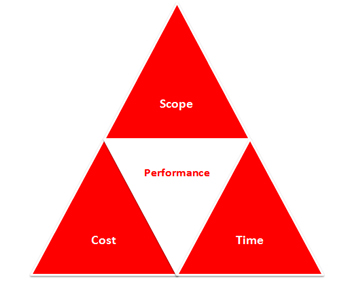
Project On Track -Core Principles
A web-based working platform, Project On Track provides complete Solution and support to the Project Controls discipline in managing portfolio of projects under enterprise project structure through –
- Set up Central and Project libraries for reference data.
- Set up of project rules, budgets and baselines and forecasts
- Resources Procurement and their management through asset registers
- Historical records for Work Progress, actual costs and resources utilization.
- Real time data collaboration, inbuilt reporting and performance monitoring
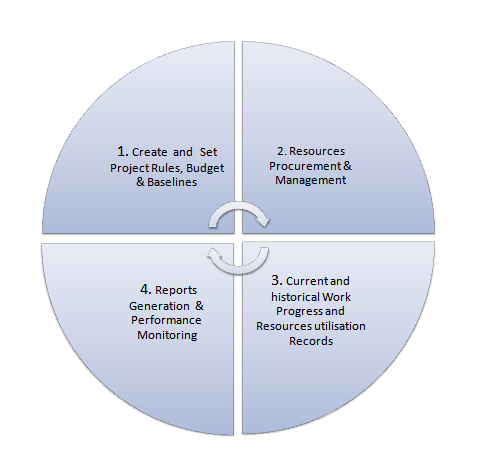
Project On Track - Life Cycle flow Chart
Project On Track bridges the gap that has traditionally existed between planning and managing project execution.
POT Home Page Features
Advanced Search
This section helps you to perform the Advanced Search.
To perform the Advanced Search, do the following.
- Click available on the top right side of the screen.
- Enter the required search keyword in the search field and the search results are shown, as shown in the figure. (Use the scroll bar if there are more search results)
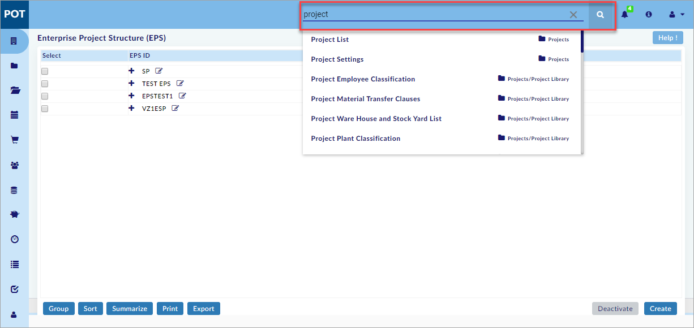
- Click any search result to go directly to the respective page in POT application as shown in the figure.
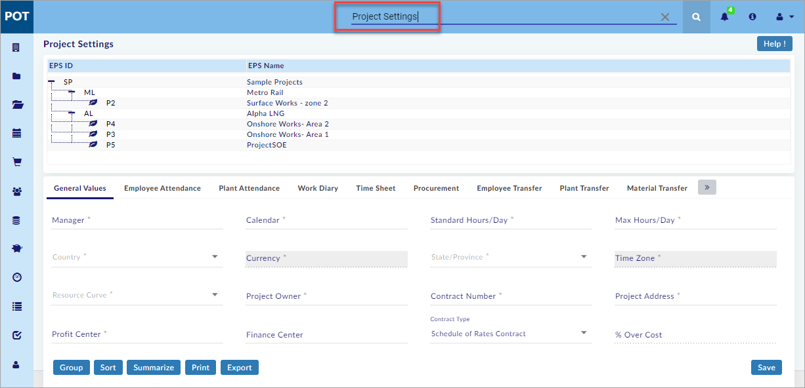
Note:
- This search feature is available on all the pages of the application
You have successfully performed the Advanced Search.
Notifications
Notifications section receives all the notifications received by the user. These include work dairy approvals, Time Sheet Approvals, Procurement, man power, plant and register approval notifications.
You can perform the following in the Notifications Section:
- Open the Notifications menu
- View the Work Diary Notifications
- View the Time Sheet Notifications
- View the Attendance Records Notifications
- View the Procurement Notifications
- View the Employee Transfer Notifications
- View the Plant Transfer Notifications
- View the Material Transfer Notifications
- View the Employee Leave Request & Approval Notifications
Open Notifications menu:
This section helps you to open the Notifications menu.
To open the Notifications menu, do the following.
- Click available on the top right side of the screen.
- The notifications menu opens as shown in the figure.
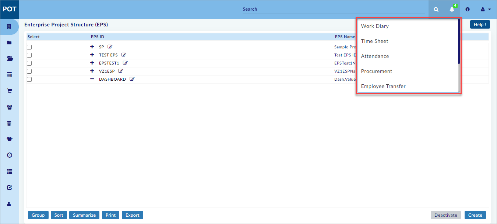
Note:
- Use the scroll bar for more notifications.
You have successfully opened the Notifications menu.
View Work Diary Notifications:
This section helps you to View the Work Diary Notifications.
To View the Work Diary Notifications, do the following.
- Open the Notifications menu (See the Open Notifications menu section above).
- Select Work Diary and the Work Diary notification page opens as shown in the figure.
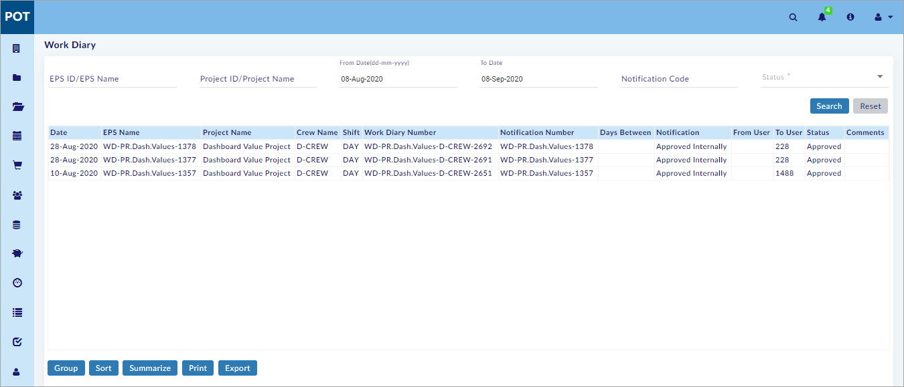
- Select EPS ID/EPS Name or Project ID/Project Name and the Enterprise Projects window opens as shown in the figure.

- On the Enterprise Projects window, select the required project.
- Select From Date and To date.
- Select Status from the drop-down menu and click Search available on the right side of the screen.
- The Work Diary Notifications are shown.
Note:
- Notifications for the current month (related to assigned project(s), irrespective of notification status) are shown (if available) without performing a search.
- To Date is the current date and From Date is one month before the current date by default.
- Click Reset to reset the screen to the default view.
You have successfully Viewed the Work Diary Notifications.
View Time Sheet Notifications:
This section helps you to View the Time Sheet Notifications.
To View the Time Sheet Notifications, do the following.
- Open the Notifications menu (See the Open Notifications menu section above).
- Select Time Sheet and the Time Sheet notification page opens as shown in the figure.
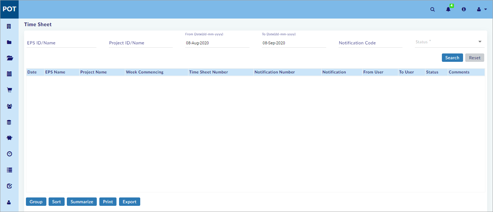
- Select EPS ID/EPS Name or Project ID/Project Name and the Enterprise Projects window opens as shown in the figure.

- On the Enterprise Projects window, select the required project.
- Select From Date and To date.
- Select Status from the drop-down menu and click Search available on the right side of the screen.
- The Time Sheet Notifications are shown.
Note:
- Notifications for the current month (related to assigned project(s), irrespective of notification status) are shown (if available) without performing a search.
- To Date is the current date and From Date is one month before the current date by default.
- Click Reset to reset the screen to the default view.
You have successfully Viewed the Time Sheet Notifications.
View Attendance Records Notifications:
This section helps you to View the Attendance Records Notifications.
To View the Attendance Records Notifications, do the following.
- Open the Notifications menu (See the Open Notifications menu section above).
- Select Attendance and the Attendance Records notification page opens as shown in the figure.
- Select EPS ID/EPS Name or Project ID/Project Name and the Enterprise Projects window opens as shown in the figure.

- On the Enterprise Projects window, select the required project.
- Select From Date and To date.
- Select Status from the drop-down menu and click Search available on the right side of the screen.
- The Attendance Records Notifications are shown.
Note:
- Notifications for the current month (related to assigned project(s), irrespective of notification status) are shown (if available) without performing a search.
- To Date is the current date and From Date is one month before the current date by default.
- Click Reset to reset the screen to the default view.
You have successfully Viewed the Attendance Records Notifications.
View Procurement Notifications:
This section helps you to View the Procurement Notifications.
To View the Procurement Notifications, do the following.
- Open the Notifications menu (See the Open Notifications menu section above).
- Select Procurement and the Procurement notification page opens as shown in the figure.
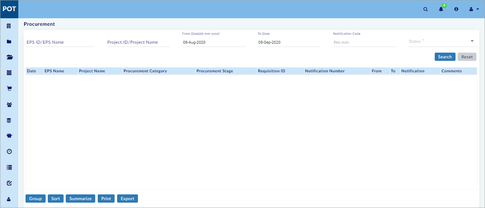
- Select EPS ID/EPS Name or Project ID/Project Name and the Enterprise Projects window opens as shown in the figure.
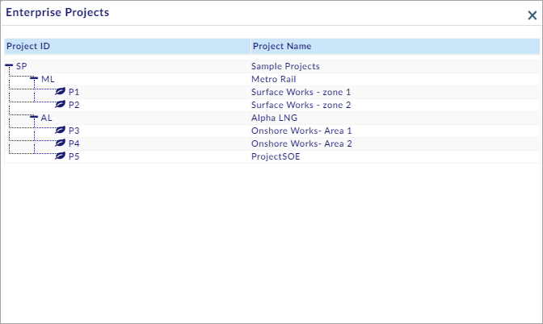
- On the Enterprise Projects window, select the required project.
- Select From Date and To date.
- Select Status from the drop-down menu and click Search available on the right side of the screen.
- The Procurement Notifications are shown.
Note:
- Notifications for the current month (related to assigned project(s), irrespective of notification status) are shown (if available) without performing a search.
- To Date is the current date and From Date is one month before the current date by default.
- Click Reset to reset the screen to the default view.
You have successfully Viewed the Procurement Notifications.
View Employee Transfer Notifications:
This section helps you to View the Employee Transfer Notifications.
To View the Employee Transfer Notifications, do the following.
- Open the Notifications menu (See the Open Notifications menu section above).
- Select Employee Transfer and the Employee Transfer notification page opens as shown in the figure.
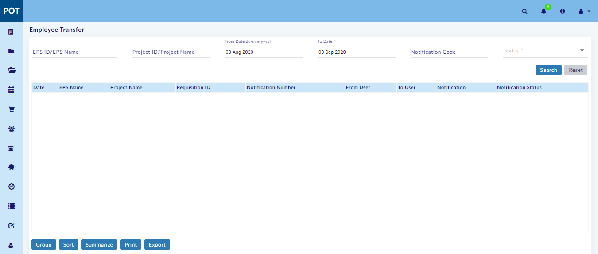
- Select EPS ID/EPS Name or Project ID/Project Name and the Enterprise Projects window opens as shown in the figure.

- On the Enterprise Projects window, select the required project.
- Select From Date and To date.
- Select Status from the drop-down menu and click Search available on the right side of the screen.
- The Employee Transfer Notifications are shown.
Note:
- Notifications for the current month (related to assigned project(s), irrespective of notification status) are shown (if available) without performing a search.
- To Date is the current date and From Date is one month before the current date by default.
- Click Reset to reset the screen to the default view.
You have successfully Viewed the Employee Transfer Notifications.
View Plant Transfer Notifications:
This section helps you to View the Plant Transfer Notifications.
To View the Plant Transfer Notifications, do the following.
- Open the Notifications menu (See the Open Notifications menu section above).
- Select Plant Transfer and the Plant Transfer notification page opens as shown in the figure.
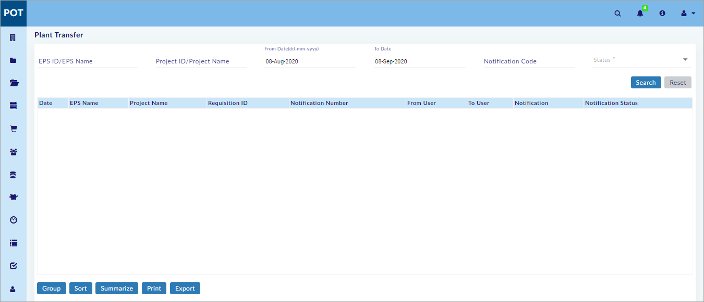
- Select EPS ID/EPS Name or Project ID/Project Name and the Enterprise Projects window opens as shown in the figure.

- On the Enterprise Projects window, select the required project.
- Select From Date and To date.
- Select Status from the drop-down menu and click Search available on the right side of the screen.
- The Plant Transfer Notifications are shown.
Note:
- Notifications for the current month (related to assigned project(s), irrespective of notification status) are shown (if available) without performing a search.
- To Date is the current date and From Date is one month before the current date by default.
- Click Reset to reset the screen to the default view.
You have successfully Viewed the Plant Transfer Notifications.
View Material Transfer Notifications:
This section helps you to View the Material Transfer Notifications.
To View the Material Transfer Notifications, do the following.
- Open the Notifications menu (See the Open Notifications menu section above).
- Select Material Transfer and the Material Transfer notification page opens as shown in the figure.
- Select EPS ID/EPS Name or Project ID/Project Name and the Enterprise Projects window opens as shown in the figure.

- On the Enterprise Projects window, select the required project.
- Select From Date and To date.
- Select Status from the drop-down menu and click Search available on the right side of the screen.
- The Material Transfer Notifications are shown.
Note:
- Notifications for the current month (related to assigned project(s), irrespective of notification status) are shown (if available) without performing a search.
- To Date is the current date and From Date is one month before the current date by default.
- Click Reset to reset the screen to the default view.
You have successfully Viewed the Material Transfer Notifications.
View Employee Leave Request & Approval Notifications:
This section helps you to View the Employee Leave & Approval Notifications.
To View the Employee Leave Request & Approval Notifications, do the following.
- Open the Notifications menu (See the Open Notifications menu section above).
- Select Leave Request & Approval and the Employee Leave & Approval notification page opens as shown in the figure.
- Select EPS ID/EPS Name or Project ID/Project Name and the Enterprise Projects window opens as shown in the figure.

- On the Enterprise Projects window, select the required project.
- Select From Date and To date.
- Select Status from the drop-down menu and click Search available on the right side of the screen.
- The Employee Leave Request & Approval Notifications are shown.
Note:
- Notifications for the current month (related to assigned project(s), irrespective of notification status) are shown (if available) without performing a search.
- To Date is the current date and From Date is one month before the current date by default.
- Click Reset to reset the screen to the default view.
You have successfully Viewed the Employee Leave Request & Approval Notifications.
Created with the Personal Edition of HelpNDoc: Easy EBook and documentation generator